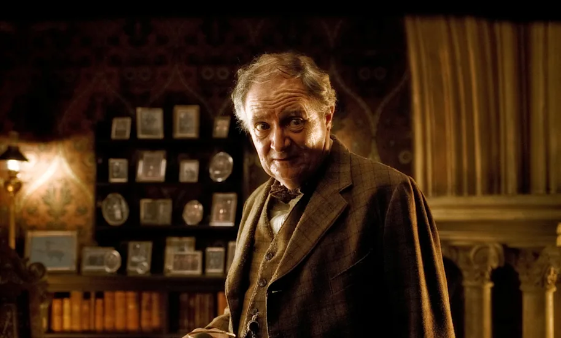
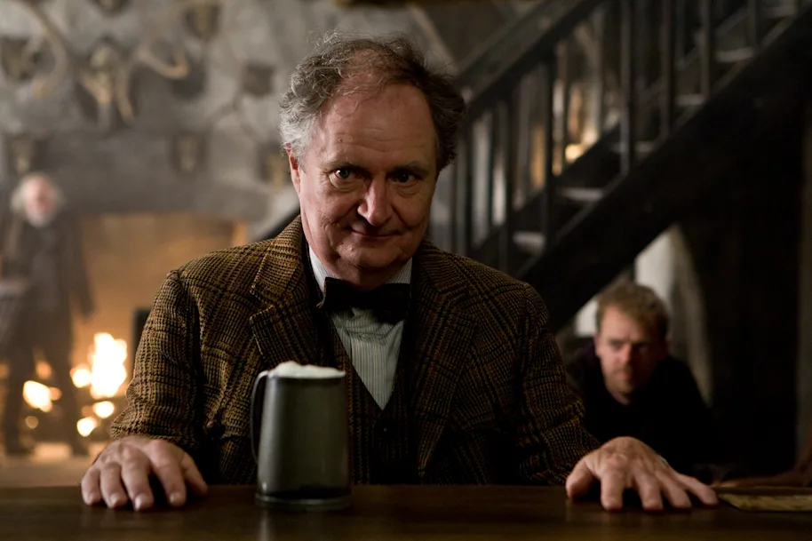

You are now leaving our website and heading to the Harry Potter shop, which has a different
privacy policy and terms of service that may not apply to children.
ounder of the Slug Club, accidental secret spiller and Potions teacher - was there more to this social-climber than his snobbish behaviour?
Horace Slughorn was content to live the easy life - full of Slug Club suppers and famous friends. Although, we don't think he was quite as shallow as he seemed. With a name that stems from the Scottish Gaelic for 'war cry': sluagh-ghairm, which later gave rise to 'slughorn', a battle trumpet - this was potentially a character with a hidden fire. Or maybe he was sedentary and passive like the common land slug - let's find out.
First, there was his childhood
When we think about all the different pieces that make Horace Slughorn, his upbringing needs to be considered. The only child of pure-blood parents, Horace was taught the importance of socialising with the 'right' kind of people from infancy. His father was a high-ranking Ministry official with a strong belief in the 'old boys' network'. As you can probably imagine, even though they weren't as vocal or fanatic as other families, they still believed that being part of the 'Sacred Twenty-Eight' made them superior.
That background coupled with being Sorted into Slytherin, could have easily equalled a Slughorn that went down the full pure-blood extremist route - discriminating against Muggle-borns and those whose pedigree wasn't quite right. Slughorn didn't do that. He subverted his parents' expectations becoming friends with many of his talented Muggle-born peers. The key point there being talented - Slughorn was a snob. But it is important to remember that this was a snob who wasn't tempted by the Dark side.

Ok, we do need to talk about the Slug Club. It embodied the slippery, social-climbing side of Slughorn (a side that took up far too much of his personality). Ever since he was a child, he was drawn to anybody who had a talent, background or celebrity status that would make them stand out. He especially loved to befriend them and graciously receive any freebies they might deign to send his way thanks to their illustrious careers (crystallised pineapple anyone?). Slughorn never wanted power for himself - he just wanted to be able to capitalise on the power of the people around him.
It's easy then to think that Slughorn was just using the members of his club, but we think Horace had a genuine affection for them. Lily Potter was a prime example. A Muggle-born, with no impressive family ties, her skill as a witch was what caught Slughorn's eye. Whenever he spoke about her, we got the sense that he was genuinely devastated by her death and the loss of her as a person - not just the loss of her talent. If you didn't shed a single tear at the story of Francis the fish, you have a heart of stone. Slughorn might have been an avid collector, but he cared for those in his collection.
Yes, he was elitist but not in the way many wizards were
Whichever way you slice it, Slughorn was not a malicious person. At worst? He was thoughtless. The way he overlooked people because they didn't (in his eyes) make the Slug Club cut was pretty gross - Ron nearly died in front of him, and he still thought he was called Rupert. We're not excusing that. But he didn't hurt people deliberately. Unlike Lucius Malfoy, Bellatrix Lestrange or even Severus Snape - Slughorn wasn't actively horrible to those around him.
His passivity and ignorance were one of his biggest flaws, yet he was also kind. He was jovial, funny and his ability for spotting and nurturing future talent - with an obvious exception - could be considered a skill in itself.

He was a good person at heart
That obvious exception we mentioned? Tom Riddle. Blinded by his confidence and talent, Slughorn was easily manipulated by a young Voldemort - revealing vital information about Horcruxes. A devastating mistake that haunted Slughorn but also one that he hid for too long.
Slughorn was wrong here - giving Harry the doctored memory was a particularly low moment for the professor. His Slytherin knack for self-preservation was working overtime and at this moment, he was selfish. However, he could have cowered in the shadows for the rest of his life - but he didn't. He looked beyond himself and did the right thing… eventually. That takes courage.